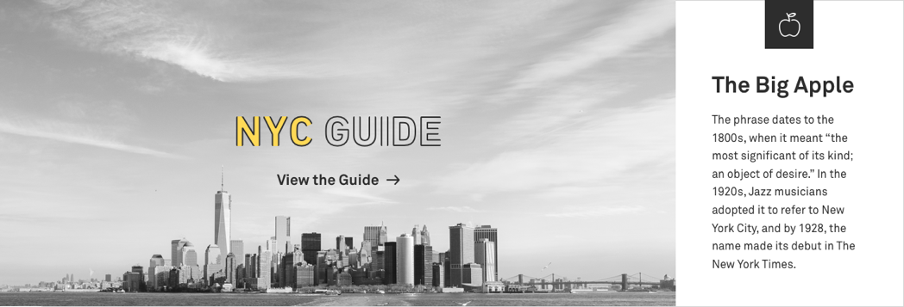
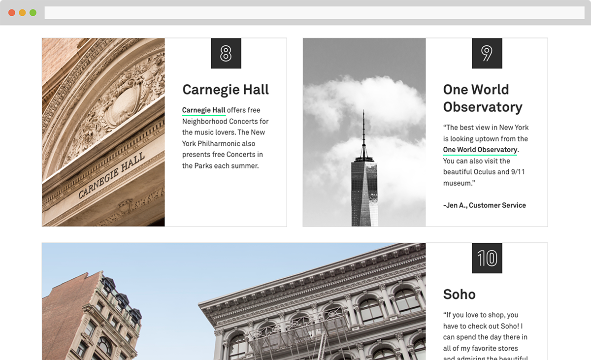
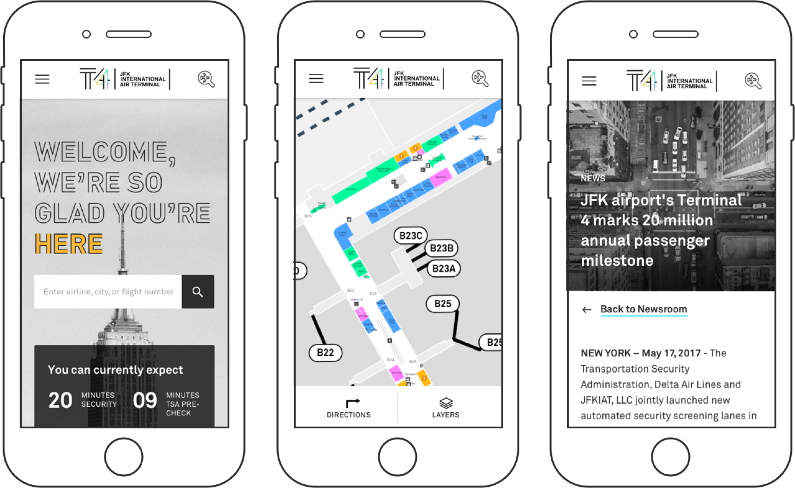

To kick off the project, I wrote a creative brief defining Terminal 4’s website’s goals, audiences, personas, and any lingering questions we had before beginning user surveying. Once defined, we targeted our main user group of travelers for a comprehensive survey on their habits and needs while in airports. This helped to further define the broad group as travelers who are planners and travelers who are browsers.
Sifting through data from customer and stakeholder interviews took multiple days and a restock of sticky notes.
After categorizing our survey findings, we began to dive into what information our broad audience of travelers, T4 staff and operations, business partners, and moreover the general public might need in a terminal website. The amount of information was huge- so our wireframes focused on organizing data in an efficient way.
A card style emerged as our way of organizing multiple, unrelated pieces of information. Cards translate well to mobile, where we knew most users would be accessing the website. In wireframes this style appeared to be a good way to intersperse images with dense blocks of text.
First iteration on card style.
Moving into the first round of design, I struggled with moving from our makeshift card style into something well designed and easily digestible. Instead of fighting to design away the cards, I embraced the style and it continued to be a viable way to organize the site.Over time, the cards evolved in the way that they are both displayed and how information, especially images are displayed within them. Aerial shots of the city included in the brand made the T4 custom font illegible.Once image cards were resolved with brand images with more white space, they began to feel disparate on each page. The third iteration of cards established guidelines for using them. Cards would be nested into blocks, divided by category.
Second iteration on card style with resolved image use.
Final iteration on card style, in a condensed row block style.
With so much content, creating a cohesive experience throughout the website was a huge undertaking. Together with the card style, we incorporated icons to recall the brand illustrations. Additionally, we used sub-menus on content heavy pages to speak to our “guide” principle. In the same vein, a lists of information were parsed into bullets for easy reading by travelers.
Pages with large amounts of information contain submenus for ease of navigation
I selected and photographed my top ten must-see places in NYC for the site’s city guide.
Most users of the Terminal 4 site will likely be in the airport, using it on mobile. We kept the info concise and easily accessible.
Terminal 4 at John F. Kennedy International airport is the only privately owned airport terminal in the US, and fresh off a rebranding Ronik was tasked with redesigning their outdated and disorganized website. The terminal is huge- one lap is about a mile, so we needed to create a website that helped travelers navigate their experience both before arriving at Terminal 4, during their time there, and after flying through. Terminal 4’s brand words “guide and delight” helped us to envision an experience that was not only for the frazzled traveler looking for a far off gate in the terminal, but also for the leisure travelers, or even New Yorkers who frequently embark from Terminal 4. View the website
Designed & built in 2022 by me!